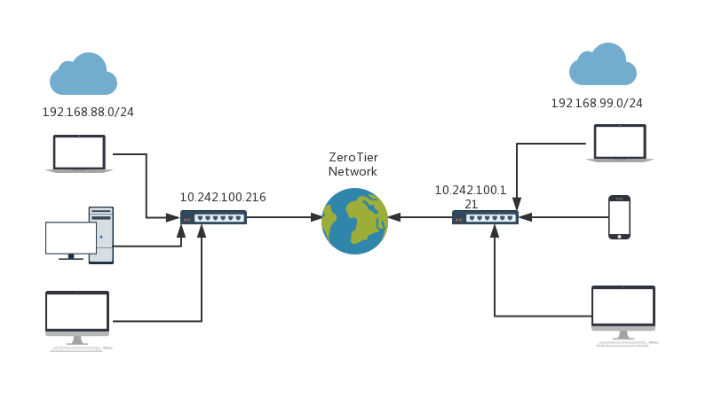
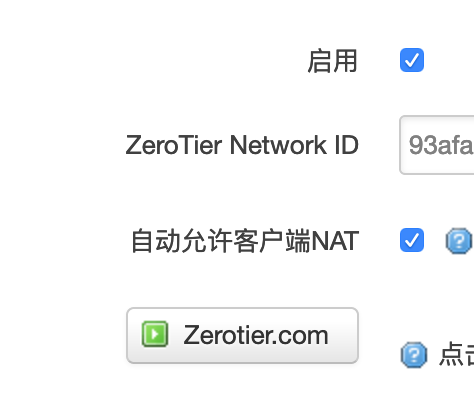

基于ZeroTier和Openwrt路由器的内网互访方案
- By 毕勤
- Wed 24 April 2019
方案选择
现在用的方案里，无非是两种，一种是像FRP这样的基于公网服务器进行端口转发的，这个有一个门槛是必须有一个公网VPS，速度要快的话自然是国内VPS最好，但国内的VPS带宽价格却是最贵的。而且当你需要转发多个同类型服务时，还需要记忆一大堆的端口，对于一些不支持自定义端口的app来说更是痛苦。
另一种就是类似n2n或者zerotier这样的打洞方式，本质是利用中转服务器牵线，最终建立二者间的直连，而且zerotier在直连失败的情况下依然可以提供中转服务，稳定性和速度都很优秀。实际测下来从公司到家里的网络间延迟大约只有10ms，排掉各级网络设备本身的延迟，应该就是直连了。
网络拓扑和最终效果
目前我在公司和家里的网络情况如下  当然，公司是我自己接了一级路由后的结果，毕竟公司的路由器不受我控制。我在公司的内网网段是192.168.88.0/24,在家的内网网段是192.168.99.0/24，最终的效果就是我在公司可以直接用IP访问192.168.99.0/24网段的设备，在家可以用IP直接访问192.168.88.0/24网段的设备，看起来就像两个网段被物理桥接在一起一样，完全就是个虚拟局域网。
注意，两地的局域网网段不能一样，否则后面没法搞，连路由表都没法写。
使用的设备和服务
两台刷了lede并有zerotier插件的路由器，注册一个zerotier账号，硬件要求就这么多了。
其他门槛：智商。
配置zerotier账号
账号本身没什么，就是注册登陆后建立一个zerotier网络，这里建议设置成private network，这样别人就不能随便加入了。
授权自己的接入点
因为设置成了private network，所以默认是无法加入这个网络的，但你可以在zerotier的网络管理界面看到哪些点，然后在auth上勾选一下，就授权了这个点接入了。
设置分配IP的网段
其实不设置根本没问题，你只要设置好路由表保证分配的网段范围都划分到同一个lan就行。我这个纯粹是强迫症而已，你们可以不设置，但如果担心有什么灵异事情发生导致不好解释的话（有什么不好解释的，就是你路由表错了呗），设置成同一个C段吧，反正最后你两地的IP要能互相ping通就行。
反正我这里设置成了10.242.100.1~10.242.100.254，保证这个IP段不和你两端任意一段路由器的LAN IP段冲突就行。
设置zerotier的路由表
这个是最重要的地方，参考我上面的网络拓扑，我的路由表如下：
10.242.0.0/16 (LAN)
192.168.88.0/24 via 10.242.100.216
192.168.99.0/24 via 10.242.100.121
第一个表示10.242.0.0/16这是同一个局域网，你们分配IP在这个范围的直连就行了，不用过别的网关了。
第二条也很好理解，公司的路由器后网段是192.168.88.0/24，而公司路由器上的zerotier分配到的IP是10.242.100.216(这个可以在zerotier网站查，也可以通过ifconfig命令在路由器查)，那么zerotier局域网内的其他IP要访问这个192.168.88.0/24网段的话，自然要通过10.242.100.216作为网关。
第三条就完全是第二条的家庭版，不解释了。
注意，这个只是告诉了zerotier局域网内的路由表，但这个路由表并不会广播到你的路由器上，你必须在路由器上设置好才行。
路由器的设置
启动并连接zerotier
这个简单到爆，看图  勾选启用，填入你的zerotier nerwork ID，勾选允许自动NAT，保存应用，搞定。
查看Zerotier的状态
首先是查看zerotier虚拟网卡的名称，直接在路由器上输入ifconfig命令，看到一个zt开头的就是zerotier的虚拟网卡了，我这里的是：ztzlgmpcam。
千万不要傻逼兮兮直接抄，算我提前求你们了，不对，不用求，反正我这里不支持评论，你们要自己挖坑就自己跳。
另外，ifconfig命令也可以看到这个虚拟网卡是否分配到了IP，这个可以告知你zerotier是否成功连上了虚拟局域网。
如果你的这台路由器从Zerotier分配到了IP A,而远端的路由器分配到了IP B，那么这个时候你从两端互相ping这个分配的IP应该是可以ping通的。
设置路由表
这可能是唯一有点技术含量的部分了，我们上面说了，zerotier网站上设置的路由表并不会广播到路由器上，经典台词：路怎么走，你们自己选。
Update:其实这个原来是旧版本的zerotier openwrt插件的一个功能缺失，现在已经修复了，所以其实现在并不需要自己再添加路由表了，所以到这里其实工作已经完成了，下面不用再看了。
而且静态路由表本来就不是最合理的做法，因为接口如果断开的话，路由表是无效的，但也不会有什么问题，因为不能访问还是不能访问，并不会有什么额外的问题。现在新版的插件中，应该是在ifup和ifdown的脚本中动态添加和删除路由表了，这个才是正确的做法。
动态版本
可以先用ip命令添加一下，测试一下是否成功，例如我们在公司的路由器上，要访问家里的192.168.99.0/24网段，家里的路由器分配的zerotier IP是10.242.100.121，那么命令是：
ip route add 192.168.99.0/24 via 10.242.100.121
使用route命令可以查看到这样一条route记录
Kernel IP routing table
Destination Gateway Genmask Flags Metric Ref Use Iface
192.168.99.0 10.242.100.121 255.255.255.0 UG 0 0 0 ztzlgmpcam
类似的，在家里的路由器添加一条到公司192.168.88.0/24网段的路由表:
ip route add 192.168.88.0/24 via 10.242.100.216
添加后用route命令应该看到这样的一条路由表：
Kernel IP routing table
Destination Gateway Genmask Flags Metric Ref Use Iface
192.168.88.0 10.242.100.216 255.255.255.0 UG 0 0 0 ztzlgmpcam
这个时候，从双方局域网的任何一台设备，都应该可以直接访问双方局域网的任意一个IP了。
固化版本
上面的ip route命令虽然来得快，但一重启就没了，最稳妥的是直接写入config文件里。编辑/etc/config/network文件，公司版本的写法,在文件最末尾添加：
config route
option interface 'ztzlgmpcam'
option target '192.168.99.0/24'
option gateway '10.242.100.121'
家庭版本的写法，添加：
config route
option interface 'ztzlgmpcam'
option target '192.168.88.0/24'
option gateway '10.242.100.216'
同样的，根据你的实际情况，替换interface为你的zerotier虚拟网卡的名称，以及后面的目标网段，和目标网段上的路由器分配到的zerotier IP。
然后/etc/init.d/network restart就可以生效了，这样的路由表重启后是不会丢失的。
后记
其实想想看，这个方案并不一定需要ZeroTier，任何你可以自己配置路由表的VPN都是可以的，只是其他的VPN方案最终都是要过服务器绕一圈，并不一定能充分发挥最大的带宽，且稳定性受限于服务器。